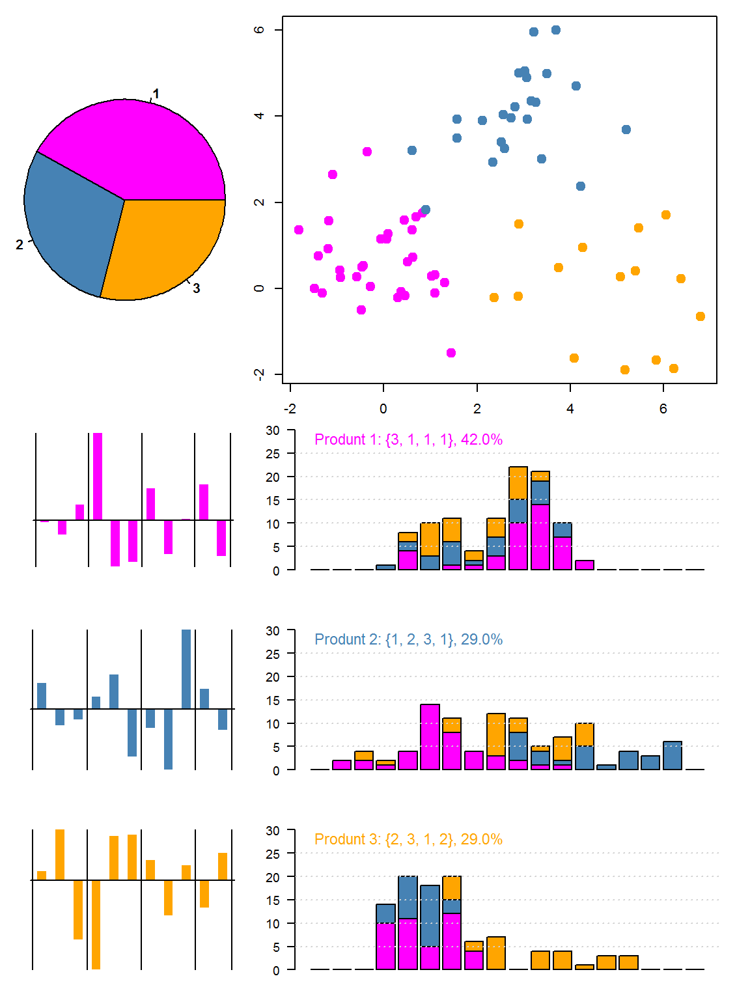

3 族群分析與市場區隔
3.1 族群分析 (K-means)
Within R, segmenatation is simply a function call
set.seed(123)
S = kmeans(W,3)$cluster
table(S)## S
## 1 2 3
## 34 28 38
這裡的區隔變數是什麼？
除此之外，還有哪一些常用的區隔變數呢？
它們是最理想的區隔變數嗎？為什麼？
3.2 Average Part Worth per Segment (APWPS)
sapply(1:max(S), function(i) colMeans(W[S==i,]))## [,1] [,2] [,3]
## intercept 4.46106 4.0602 2.36787
## low 0.44326 0.2668 0.03905
## medium 0.29612 -0.7620 -0.08003
## high -0.73918 0.4952 0.04103
## black -0.26476 -0.1239 1.94629
## green 1.10582 0.4047 -1.19582
## red -0.84115 -0.2808 -0.75058
## bags -0.03909 -0.3239 0.63403
## granu -0.40962 -2.0666 -0.45229
## leafy 0.44915 2.3904 -0.18176
## yes -0.08138 0.8737 0.51003
## no 0.08138 -0.8737 -0.51003APWPS的定義是什麼？ 它的策略意涵是什麼？
Let’s build a function Seg(k, seed)
Seg = function(k, seed, seeding=F) {
P = matrix(rep(0, k*4 ), ncol=4)
U = matrix(rep(0, k*nrow(W)), ncol=k )
lx = c(1,2,2)
for(i in 2:k) lx = c(lx, (i-1)*2 + c(1,2,2) )
h = rep.int(1,k)
if(k==3) h[1]=2 else if(k>=4) h[1]=3
layout(matrix(c(1,2,2,2+lx),k+1,3,byrow=T),heights=h )
sd = ifelse(seeding, sample.int(1000,1), seed)
set.seed(sd)
S = kmeans(W,k)$cluster
n = as.vector(table(S))
# cat(k, 'segments, seed =', sd, ', N =', n, '\n')
m = apply(W[,2:ncol(W)], 2, function(x) tapply(x ,S, mean))
par(mar=c(2,1,2,1))
pie(table(S),radius=1,col=col1[1:k],font=2)
dc = discrcoord(W, S)$proj[,1:2]
par(mar=c(1,2,1,2))
plot(dc[,1],dc[,2],type='p',col=col1[S],pch=19,cex=1.5)
for(i in 1:k) {
par(mar=c(2,2,2,1))
barplot(m[i,],las=2,axes=F,axisnames=F,col=col1[i],
width=.5,space=1,border=NA)
abline(h=0, v=c(0,3,6,9,11)+0.25 )
P[i,1] = which.max(m[i,1:3])
P[i,2] = which.max(m[i,4:6])
P[i,3] = which.max(m[i,7:9])
P[i,4] = which.max(m[i,10:11])
U[,i] = rowSums(W[, c(1, P[i,]+c(1,4,7,10)) ])
mtx = sapply(1:k, function (k) sapply(-4:13, function(x)
sum(U[S==k,i] >= x & U[S==k,i] < x+1 )) )
mtx = t(as.matrix(mtx))
par(cex=0.6,mar=c(2,3,2,2))
barplot(mtx,las=2,ylim=c(0,30),col=col1)
abline(h=seq(5,25,5),col='lightgrey',lty=3)
z = paste(P[i,],collapse=', ')
text(0,28,sprintf("Produnt %d: {%s}, %.1f%%",
i,z,100*n[i]/nrow(W)),cex=1.2,pos=4,col=col1[i])
}}As shown bloew, Seg(k, seed) makes k segments with seed, and plots:
- a pie charts that shown the propotions of segments
- a scatter chart that marks every respondents on the Reduced Product Attribute Space
- and for each segment:
- derive its corresponding APWPS
- defind a product with the Worthiest Parts, and
- draw the product’s Distribution of Utility, colored by segments
Seg(3,779)
SIM-2: 族群分析與市場區隔
在 RStudio 裡面，做模擬程式其實是很容易的：
manipulate( Seg(k, 123, seeding),
k = slider(2,5,2,step=1),
seeding = button("Reset Seed") )試使用這個模擬程式，回答下列問題：
同一族群的消費者，是否會有相似的價值判斷呢？為甚麼？
你可以從從儀錶板上面觀察到這種現象嗎？
分別在\(k=2,3\)，找出你覺得最好的區隔？把seed記下來，大家來比看看。
從儀錶板上面，你如何判斷某一區隔的優劣呢？
適合做產品設計的市場區隔，也會適合拿來做訂價策略、通路策略、媒體策略嗎？
價值係數之外，受測者的人口統計或生活型態變數對我們的行銷策略會有什麼幫助？
我們要如何利用這些資訊呢？